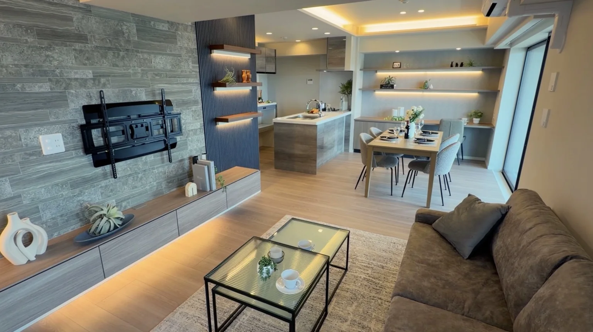
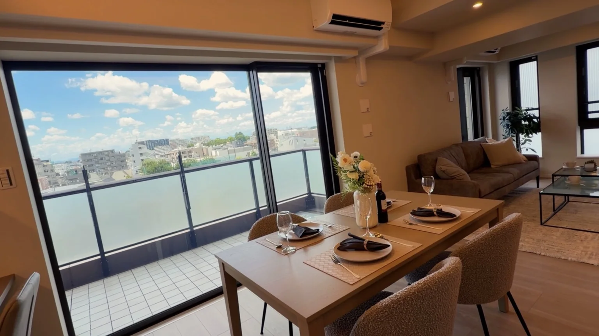
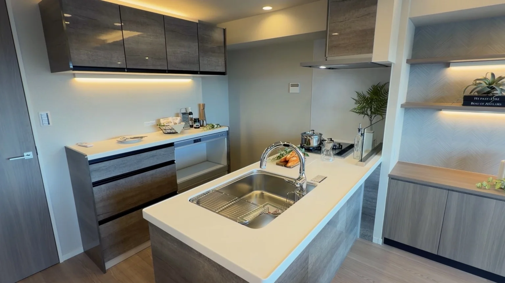
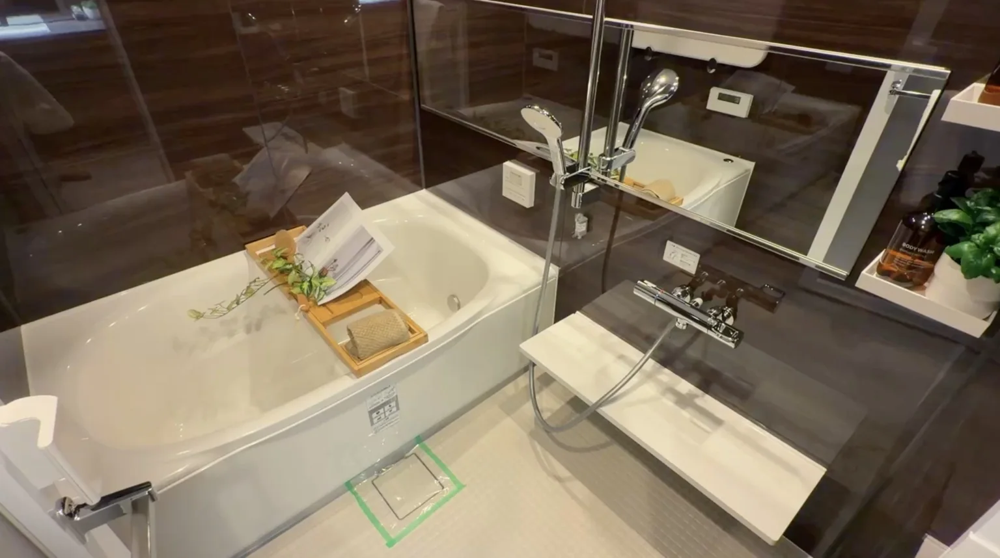
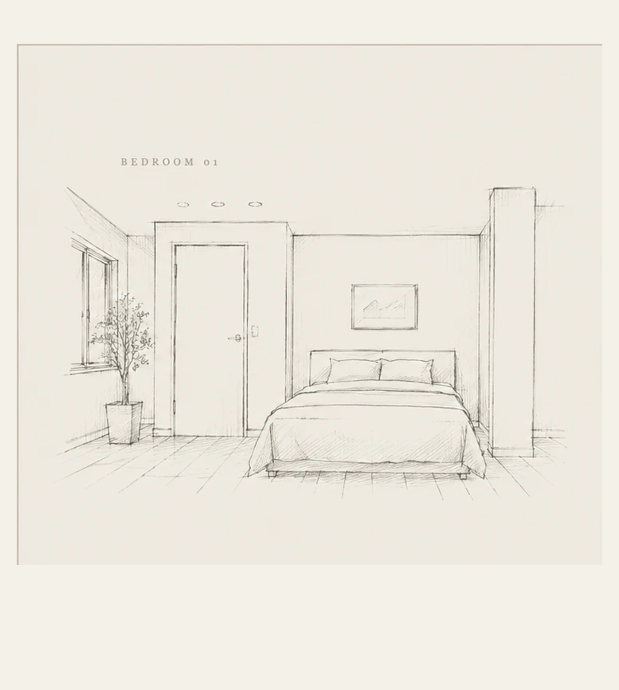
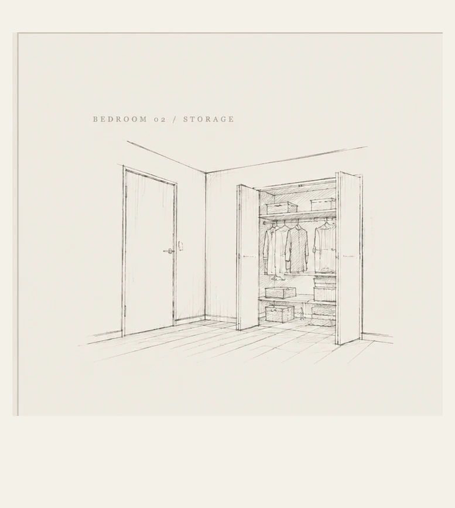
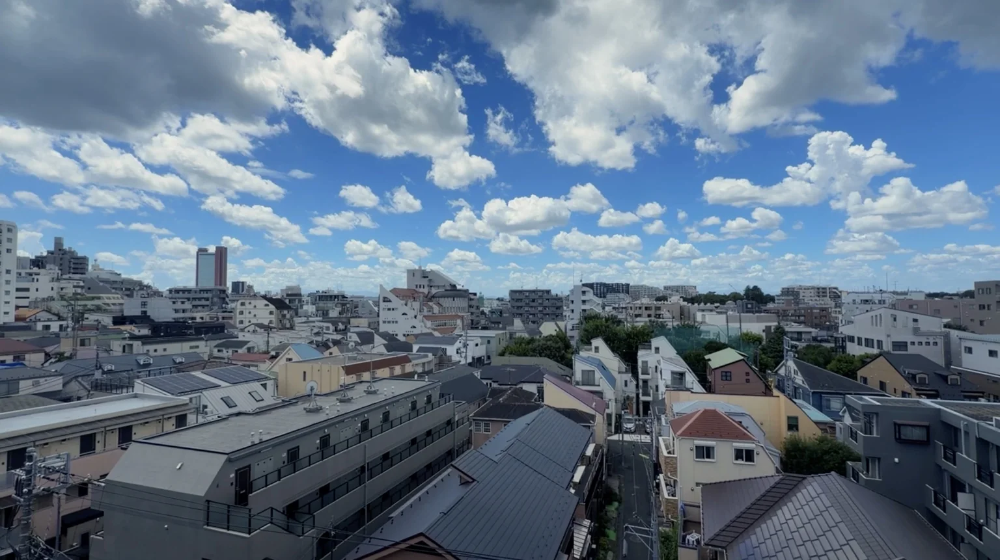

IKEJIRI / SETAGAYA
窓辺に、
空の余白を。
アトラス池尻レジデンス
01 / PROPERTY
渋谷からひと駅。
静かな日常へ。
都心の近さを持ちながら、家では少し落ち着いて過ごしたい。そんな暮らしに似合う、フルリノベーション済みの一室です。約17.8帖のLDKと、街並みの向こうまで空が広がる眺望が印象に残ります。
大きな窓、やわらかな木目、間接照明。
家具を置く前から、この部屋には
暮らしの景色ができあがっています。

DINING / VIEW02 / LIVING
ダイニングの先に、
街と空が続く。
この部屋で最も印象的なのは、リビング・ダイニングの大きな開口部。住宅街の屋根や街並み、その向こうの空までを近い距離で感じられます。
窓辺にダイニングを置けば、朝食の時間も、休日にコーヒーを飲む時間も、いつもの日常が少しだけ特別に。

KITCHEN
BATHROOM LIVING / DINING
LIVING / DINING03 / PRIVATE ROOM
洋室は、
ひとつの章として。
洋室は実写を大きく並べず、空間の雰囲気を伝える鉛筆デッサンでひとつの章としてまとめました。約6.6帖と約4.8帖の2室に加え、クローゼットやマルチウォークインクローゼットを備えています。


※デッサンは空間のイメージを表現したものです。実際の間取り・形状・家具配置を正確に再現したものではありません。実際の室内は「実際の洋室写真を見る」からご確認いただけます。

04 / VIEW
近くに街、
その先に空。
池尻の住宅街と大きな空が日常の延長にある眺望。窓のそばで過ごしたくなる理由が、この景色にはあります。
05 / LOCATION
暮らしやすさが、
徒歩圏にまとまる。
※周辺施設との位置関係を示す概略図です。縮尺・道路形状は実際と異なります。
MORE INFORMATION
間取り図や、
詳しい情報を知りたい方へ。
間取り図、設備・管理状況、現在の販売状況など、動画や記事では紹介しきれなかった詳細情報は公式LINEからご案内しています。実際に見てみたい方は、内見についてもお気軽にご相談ください。
公式LINEで物件詳細を見る↗LINEから間取り図・詳細資料・販売状況・内見についてご案内しています。